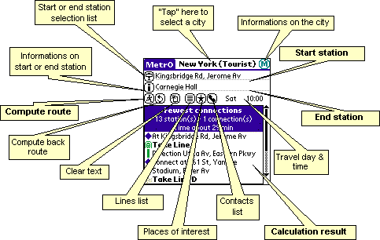

| Métro User guide |
| Métro User guide |
| One-picture guides |
Palm |
||
PocketPC
|
||
| Route search |
The easiest solution : you
write down the names of the departure and arrival
stations (you need only enter the first letters,
Métro will complete the names for you) then
"tap" on the  (go) button. Part of a name may
be enough (in Paris, "Etoile" will find the
station "Charles de Gaulle-Etoile").
(go) button. Part of a name may
be enough (in Paris, "Etoile" will find the
station "Charles de Gaulle-Etoile").
If the option is activated in the Preferences (see
below), the closest stop name will be filled
automatically by the program as you enter characters in
the field.
Assisted solution :
"tap" on the  (stop) button, a list appears
with all the stations. Just "tap" on the one
you're looking for, it is displayed as the departure
station. When you "tap" on the arrival field,
you can do the same for the arrival station. Finally,
"tap" on the
(stop) button, a list appears
with all the stations. Just "tap" on the one
you're looking for, it is displayed as the departure
station. When you "tap" on the arrival field,
you can do the same for the arrival station. Finally,
"tap" on the  (go) button.
(go) button.
Intelligent assistance : same
as above but before you "tap" on one of
the  button, enter the first few
characters of the name of the station. The
position in the list is updated to the name closest to
your entry.
button, enter the first few
characters of the name of the station. The
position in the list is updated to the name closest to
your entry.
Permanent assistance : after the list is displayed (as above), simply enter text in the Departure or Arrival field. The position in the list is updated to the name closest to your entry.
The fastest: write down the first characters of your departure station, enter the graffiti linefeed sign, enter the first characters of your destination station then again the graffiti linefeed sign: the calculation is done!
The icing on the cake:
the program memorizes the last stations you used. To
display the history list, "double tap" on the  (station).
(station).
One-hand operation on Handera and Sony devices: press the JogDial, search your start stop in the list (scroll with the up/down button and change the selection with the JogDial), press again to select your stop, select your arrival station (same operation), press to compute the route and scroll through the results with the JogDial.
One-hand operation on palmOne devices (Tungsten & Treo 6xx): press the "select" button, search your start stop in the list (scroll with the up/down button and change the selection with the left/right button), press "select" again to select your stop, select your arrival station (same operation), press "select" a last time to compute the route and scroll through the results with the navigator.
Multiple stops: on PocketPC devices (not on Palm), you can enter 2 or more stops as a start or end point (useful if you are close to 2 stops and don't know which one will get you to your destination faster). Separate the stop names with a semi-colon: ";". You can even specify the walk time from your location to the stops, by adding a "%" and the time in minutes after the stop name (example: "République%5;Goncourt%3", meaning I am 5 min. from République and 3 min. from Goncourt).
In some cities, you can search a place of interest instead of a subway station (how do I go to the Eiffel tower, for example). These sites appear in bold in the stations list.
Tap on the  (info) to display some information on the start or end station
(whichever has the focus). On the places of interest in the
"tourist" databases, you'll even get detailed
information such as address, phone number, opening times...
(info) to display some information on the start or end station
(whichever has the focus). On the places of interest in the
"tourist" databases, you'll even get detailed
information such as address, phone number, opening times...
| Back |
The  (back)
button is a simple way to compute your route back from Arrival to
Departure without having to enter the names of the stations
again.
(back)
button is a simple way to compute your route back from Arrival to
Departure without having to enter the names of the stations
again.
| Clear |
The  (clear) button resets the "Métro" GUI: it clears the
departure and arrival station, the stations list and the result
field. It also optionnally resets the current time (see options).
(clear) button resets the "Métro" GUI: it clears the
departure and arrival station, the stations list and the result
field. It also optionnally resets the current time (see options).
| Timing |
This feature is available with most databases but not all.
When using these cities, the day of the week and time are
displayed on screen. You just have to "tap" these
fields to change your trip time. The  (clear) button
can optionnally reset the current time (see "Options").
(clear) button
can optionnally reset the current time (see "Options").
On the currently selected day and time, some lines may not operate or have a different route; "Métro" takes this into account to compute a route.
| Lines |
The  button
displays the list of lines in the current city. Select a line to
list its stations (for some cities, the title background reflects
the line color). You may then "tap" on one of these
stations to enter it in the "From" or "To"
field (depending on the one where the caret is). Arrows (up or
down) before the name of a station denote a stop in only one
direction.
button
displays the list of lines in the current city. Select a line to
list its stations (for some cities, the title background reflects
the line color). You may then "tap" on one of these
stations to enter it in the "From" or "To"
field (depending on the one where the caret is). Arrows (up or
down) before the name of a station denote a stop in only one
direction.
A line is "operating" (that is, used for calculating a route) only if the box next to it in the list is checked. If there is an "X" mark, it means the line is closed on the current day and time. You can also uncheck the box if you don't want to use the line (in case of a temporary interruption for example).
In some cities, an icon shows the transport "type"
(subway, railway, tram, bus, funicular, trolley or boat) and the
line color. In this case, clicking a second time on the  button
will show the list of line "groups" that lets you
easily de-/activate the corresponding lines: for instance, if you
don't want to take the NJ Transit lines in New York, just uncheck
its "group" in the list and the program will not try to
use them and the calculation will be faster.
button
will show the list of line "groups" that lets you
easily de-/activate the corresponding lines: for instance, if you
don't want to take the NJ Transit lines in New York, just uncheck
its "group" in the list and the program will not try to
use them and the calculation will be faster.
On Palm devices, the activation state is saved between uses for line groups but not for individual lines.
| Places of Interest |
In some cities, the database contains a list of
"Interesting places": the program can give you
directions to go to these places, just as for a station. To see
the list, "tap" on the  (sites) button next to the line popup.
The button is grayed out if there are no interesting places in
the current database.
(sites) button next to the line popup.
The button is grayed out if there are no interesting places in
the current database.
| Address |
You may have noticed the  (address) icon: you can use it to compute a route from
or to one of your contacts' address. When you "tap" on
the button, a list is displayed containing all the contacts in
your address book with a "metro" field. If you select
one of the names, it appears in the "from" or
"to" field, prefixed with an "@".
(address) icon: you can use it to compute a route from
or to one of your contacts' address. When you "tap" on
the button, a list is displayed containing all the contacts in
your address book with a "metro" field. If you select
one of the names, it appears in the "from" or
"to" field, prefixed with an "@".
You can also directly enter a contact name (with an "@" prefix) in the "from" or "to" fields. The "auto-fill" feature is then available, if the option is activated in the preferences (see below).
For this feature to work:
On Palm devices, you'll have to create a custom field named "metro" (check your device user's guide to learn how to do this) in your address book and fill this field for your contacts. You can enter more than one stop, separated by semi-colons (";").
You can specify the city the stops applies to:
prefix the stop names with the city name or its first characters
(exactly as it is spelled in the program) and a colon
(":"), the contact will appear in bold in the list if
the current city matches the city specified. Example: Paris:République;Gare
de l'Est ("Paris" will
match the Paris as well as the Paris-Bus databases).
You can even add the walk time
between the contact's address and each stop: enter the time (in
minutes) after a '%' just after the stop
name. Example : République%4;Gare de l'Est%10 (the
address is 4 minutes from "République"
and 10 minutes from "Gare de l'Est").
If you don't enter a value, the program adds a 5 minutes walk.
On PocketPC devices (except
Windows CE 2.0 devices), add a note to your contacts in the form <METRO>station1;station2</METRO>
where "station1" and
"station2" are the closest stops
from the contact's address. To distinguish between addres types
you can create 3 different "fields": <METRO
TYPE="BUSINESS">station1</METRO>
for the office address, <METRO
TYPE="HOME">station2</METRO> for
the home address and <METRO
TYPE="OTHER">station3</METRO> for
another address.
You can specify the city the stops applies to with this
syntax: <METRO
CITY="cityname">station</METRO>
(example: <METRO
CITY="Paris">République</METRO>). In
that case the contact list will only show the contacts with a
stop in the current city.
Of course, you can use both the "type"
and "city" attributes in the same
tag (example: <METRO TYPE="BUSINESS"
CITY="Paris">République</METRO>)
You can even add the walk time
between the contact's address and each stop: enter the time (in
minutes) after a '%' just after the stop
name. Example : <METRO
CITY="Paris">République%4;Gare de
l'Est%10</METRO> (the address is 4 minutes from
"République" and 10 minutes from
"Gare de l'Est"). If you don't
enter a value, the program adds a 5 minutes walk.
On these devices, the contacts list is resizable and sortable. The stop names should be entered exactly as they appear in the program.
| Results |
When you "tap" on the  (go) button (or enter the linefeed
graffiti in the "to" field), the calculation starts. If
it's taking some time (more than about 2 seconds), a progression
bar is displayed on screen. You can "tap" on it to stop
the search, you'll get the best route calculated so far.
(go) button (or enter the linefeed
graffiti in the "to" field), the calculation starts. If
it's taking some time (more than about 2 seconds), a progression
bar is displayed on screen. You can "tap" on it to stop
the search, you'll get the best route calculated so far.
After a search, the results lists displays 1 or 2 different routes for your request: the shortest route and the route using the fewest connections. If they are the same, only the shortest one is displayed. Sometimes, both may take the same time and number of connections but have some other difference.
For some cities, the vertical bar next to a line name reflects its color. An icon may also show the transport "type" (subway, railway, tram, bus, funicular, trolley or boat).
PalmOS: Tap once in the results text to copy to the clipboard. You can then paste it in a memo or a mail.
Tap once on the icons (left column) to get detailed information on your route:
| Informations |
The  button
(informations) shows informations on the selected city, along
with the names of the people who contributed to the database. It
also shows the city release date (useful to check if you have the
most recent version).
button
(informations) shows informations on the selected city, along
with the names of the people who contributed to the database. It
also shows the city release date (useful to check if you have the
most recent version).
| Options |
In the "Options" menu, the "Preferences" item has the following choices :
For those who don't know how to access the menus on their Palm, check the silk-screen button bottom-left of the graffiti zone... And take a break to read your device user guide :-)
Tap on  (OK)
to save your changes
(OK)
to save your changes  (Cancel) to go back to the main view.
(Cancel) to go back to the main view.
On PocketPC, you can also:
windows/fonts
folder, then select it here!The "Network" option shows the list of cities you have installed with "Métro".
You can also access the "Network" option simply by "tapping" on the city name in the "Métro" main form title.
A little " "
after a city name denotes an obsolete database: you can delete it
and you must upgrade to a newer version to use it. Those cities
found on an extension card (in the
"
after a city name denotes an obsolete database: you can delete it
and you must upgrade to a newer version to use it. Those cities
found on an extension card (in the /PALM/Programs/metro
directory only) are displayed with a special icon (see the installation guide for more
instructions).
| PocketPC Options |
Send comments
This one creates a new mail, where you can enter your comments
(or simply write a thanks note), and send it to Frank.
Subscribe to the Métro mailing list
This will create a mail that will register your address on our
mailing list, where we announce every new release as it comes
out!
Receive network & Beam current network
These 2 options let you exchange your city files with other
PocketPC user through the IR (infrared) port on your device.